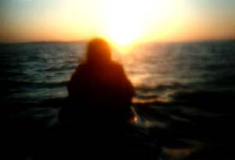
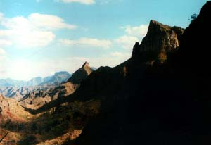

Sitting around the fire the night before, Tom asked who would be interested in a paddle out to see the sun rise. It's an amazing experience, he added, no one ever regrets it. It sounded interesting to us, and we asked him when we'd be leaving. "Oh, around a quarter to 5 or so," he said in his matter of fact voice.
I was totally lost when Leslie shook me awake. We had just spent our first night in a tent, and it was still completely dark. Leslie was pulling some clothes on as I started to recall last night's conversation with Tom, and was praying nobody had taken me seriously. Finally, I managed to get something on and before I knew it, I was paddling through the dark, still water, moving straight out from shore.

The sky started to turn pink and orange as dawn approached. As the minutes went by, I was amazed at how beautiful the horizon became. And it kept happening, over and over, as the sun came closer to breaking over the edge of the water. Then, suddenly and with more force than I could imagine, the first powerful rays of sunshine blasted from behind the waves and we all shielded our eyes in unison. For a few moments, the sky exploded in color and we sat in silence gasping at the wonderful display. We also felt a slight breeze come across the bow.
As we turned the boats around, I was a bit surprised to see the land as a mere strip on the horizon. We seemed to be miles away, and we started paddling as, once again, the wind began to howl. This time, however, it did not blow down the coast as before, but blew straight from the land out to sea. And again, this was right into our faces. I won't dwell on the struggle yet again, or talk about how the gusts blew us backwards, or how our muscles screamed against the early morning pain of paddling. I don't want you to think that's all we ever did.
That after noon, Leslie and I decided to take another hike in a canyon behind the camp I had found while looking for a place to use as a restroom. Martin joined us, as did a couple of other younger member so of the group. We hiked back through the canyon, past thick groves of cacti, when Martin suggested we find some altitude. We turned up and began climbing in a gully toward the ridge behind our camp. Our effort was rewarded with stunning vistas of the whole range and out to the sea. We talked about Frank Zappa and Martin's new home, which he had built by hand in three weeks out of drift wood on some land he owned up in BC. As we got higher, the way got steeper and narrower, until we were climbing the rocks and edges of the canyon. Finally, we could see the top of the ridge, and I pressed on while the others waited. As I got close, the walls of the canyon got looser and started crumbing under me until I was clinging to a dead tree sending rocks and earth down below me. I turned back a hundred yards from the top.

That night, I drifted off to sleep in our tent to the sound of the campfire crackling and muffled voices from those staying up later. Just as I was about to nod off, I was startled by a loud crack, then excited cries and shuffling around. One of the rocks in the fire ring had exploded, sending white hot shards of stone out from the fire and into the group sitting around. No body was hurt but Martin, who caught a piece between his legs, burning a hole in the seat of his pants and damaging his ego even more.